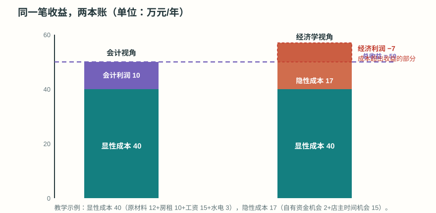
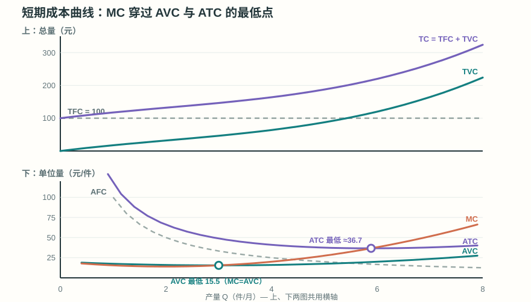

CHAPTER 12 · MICROECONOMICS
成本分析：会计师 vs 经济学家
同一个数字，两本账：为什么账面盈利的企业，在经济学家眼里可能在亏钱；以及 MC 为什么必然穿过 ATC 和 AVC 的最低点。
同一家店，两本账
一位店主年底拿到两页纸。第一页是会计师的利润表：全年营收 50 万元，原材料、房租、员工工资、水电设备合计 40 万元，账面利润 10 万元。第二页是他自己私下算的：如果当初不把 50 万元投进货与装修，而是买年息 4% 的国债，一年能有 2 万元；如果他不自己看店、而是去别家当店长，年薪 15 万元。这两笔钱从未从账户里流出去，却真实存在。把它们算进去后，这店还“赚钱”吗？
本章要回答两个问题：成本到底包括什么，以及当产量变化时，短期成本曲线为什么长成那个样子。
显性成本与隐性成本
分歧的根源在于对成本的定义。会计只记显性成本 explicit cost——真金白银流出去的支出，如原材料、工资、房租，账本上有据可查。但经济学用的是机会成本 opportunity cost：一笔资源用于此处而坐失的次优用途，无论它是否真的付过钱。
由此得到隐性成本 implicit cost——使用“自己拥有的资源”所放弃的收益：自有资金本可赚的利息、店主本人时间本可赚的薪资。两类成本相加，才是经济学的完整成本：
会计利润、经济利润与正常利润
把两类成本分别扣除，就得到两个不同的利润概念：
用开头的教学示例算一遍（假设 / 教学示例，单位：万元/年）：总收益 R=50；显性成本 40（原材料 12 + 房租 10 + 工资 15 + 水电设备 3）；隐性成本 17（自有资金机会 2 + 店主时间机会 15）。
| 项目 | 金额（万元/年） | 说明 |
|---|---|---|
| 总收益 | 50 | 全年营收 |
| 显性成本 | 40 | 账本上真实流出的支出 |
| 会计利润 | 10 | 50 − 40，账面盈利 |
| 隐性成本 | 17 | 自有资金机会 2 + 店主时间机会 15 |
| 经济利润 | −7 | 50 − 40 − 17，经济学意义上亏损 |
| 正常利润 | 17 | 全部隐性成本；被经济学家当作成本的一部分 |
这里最容易误解的是正常利润 normal profit：它不是“额外赚的利润”，而是企业家才能与自有资本的机会成本，属于成本。当经济利润为零，企业恰好获得正常利润——没有亏，也没有比次优用途多赚。

短期成本：固定与可变
短期里至少有一种投入固定（厂房、设备），于是总成本分为不随产量变化的部分与随产量变化的部分。七个核心概念如下：
- 总固定成本 TFC——不随产量变化（房租、设备折旧），产量为零也得付。
- 总可变成本 TVC——随产量变化（原材料、计件工资）。
- 总成本 TC = TFC + TVC。
- 平均固定成本 AFC = TFC / Q，随产量增加不断被摊薄。
- 平均可变成本 AVC = TVC / Q，通常是 U 形。
- 平均总成本 ATC = TC / Q = AFC + AVC，通常也是 U 形。
- 边际成本 MC = dTC/dQ，每多生产一单位所增加的成本。
下面用一个与上一章生产函数呼应的教学示例。设月租金（固定成本）TFC=100，总可变成本 TVC(Q)=20Q−3Q²+0.5Q³，则 MC=20−6Q+1.5Q²，AVC=20−3Q+0.5Q²。MC 先降后升，根子就在上一章的边际报酬递减：固定投入不变时，多生产一单位所需的可变投入终将增加，于是边际成本上升。
| Q | TFC | TVC | TC | MC | AFC | AVC | ATC |
|---|---|---|---|---|---|---|---|
| 1 | 100 | 17.5 | 117.5 | 15.5 | 100 | 17.5 | 117.5 |
| 2 | 100 | 32 | 132 | 14 | 50 | 16 | 66 |
| 3 | 100 | 46.5 | 146.5 | 15.5 | 33.3 | 15.5 | 48.8 |
| 4 | 100 | 64 | 164 | 20 | 25 | 16 | 41 |
| 5 | 100 | 87.5 | 187.5 | 27.5 | 20 | 17.5 | 37.5 |
| 6 | 100 | 120 | 220 | 38 | 16.7 | 20 | 36.7 |
| 7 | 100 | 164.5 | 264.5 | 51.5 | 14.3 | 23.5 | 37.8 |
| 8 | 100 | 224 | 324 | 68 | 12.5 | 28 | 40.5 |

为什么 MC 穿过 ATC 与 AVC 的最低点
这是微观经济学最可靠的几何规律之一：边际成本曲线一定穿过平均总成本与平均可变成本各自的最低点。它和“班级平均分”是同一个道理：新来一个分数低于当前平均分，平均分就被拉低；高于平均分，就被拉高；恰好相等时，平均分正好到顶或触底。
因为 Q>0，dATC/dQ 的符号完全由 MC−ATC 决定：MC<ATC 时 ATC 下降，MC>ATC 时 ATC 上升，MC=ATC 时 ATC 取极值。同一推导适用于 AVC（把 ATC 换成 AVC 即可）。用上表验证：Q=3 处 MC=AVC=15.5，AVC 到低点；Q≈5.9 处 MC=ATC≈36.7，ATC 到低点。
沉没成本：决策时不该回头看
沉没成本 sunk cost 是已经发生、无法收回的成本。它和固定成本不同：固定成本在短期内不变，但退出行业时可能部分收回（设备可转卖）；而定制化投入、已花掉的宣传费等则是彻底收不回的。
经济学的原则是：做决策时不考虑沉没成本，因为它无论如何都不会因你接下来的选择而改变。可用的检验是：“如果我今天还没有开始这件事，现在还会选择开始吗？”如果答案是否定的，就应该考虑退出。
明知不可行却因“已经投了太多”而继续加注，这种非理性行为被称为协和效应 Concorde effect，得名于英、法两国政府当年对协和客机的持续投入：即使商业前景已很黯淡，仍因已付出的高额成本而继续追加，最终未能收回。这说明沉没成本谬误在个人与企业之外，也可能出现在大型组织中。
交互实验：改变产量
短期成本实验
固定成本 TFC=100，总可变成本 TVC(Q)=20Q−3Q²+0.5Q³（教学示例）。拖动滑块改变产量，观察 MC 何时高于、何时低于 ATC 与 AVC。
Q=3：TC=146.5，MC=15.5，ATC=48.8，AVC=15.5。
每次根据解析式重新计算，不使用随机值；默认 Q=3 对应 AVC 的最低点（MC=AVC）。
如果月租金 TFC 从 100 涨到 150，而 TVC 不变，哪些曲线会移动，哪些不会？AVC 的最低点会变吗？
查看答案
只有涉及固定成本的曲线移动：TFC、TC、AFC、ATC 会上移，而 TVC、AVC、MC 不变（它们只由可变成本决定）。因此 AVC 的最低点仍在 Q=3（15.5）；ATC 上移，其最低点位置也会因 AFC 摊薄而轻微变化。
引用文献、定义与适用范围
本章的数值、成本表与曲线均从假设模型 TFC=100、TVC(Q)=20Q−3Q²+0.5Q³ 推导，属于教学示例，不是观测数据；显性/隐性成本、会计/经济利润与短期成本概念参考以下教材：
- OpenStax · Principles of Microeconomics 3e, Ch. 7: Production, Costs, and Industry Structure
- OpenStax · Principles of Microeconomics 3e（教材首页）
需要提醒的是：本章的“正常利润”是机会成本意义上的回报，不是会计科目。将成本曲线与收入对比得到利润最大化的产量，属于下一章完全竞争市场的内容。